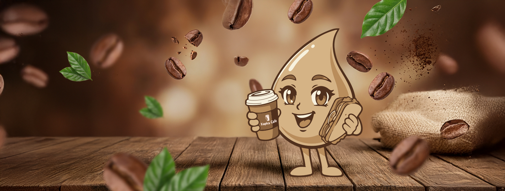
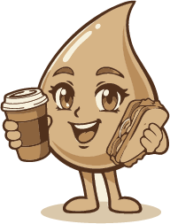
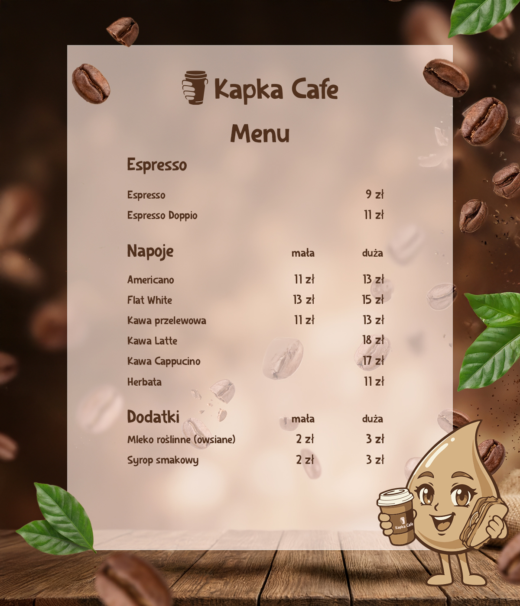
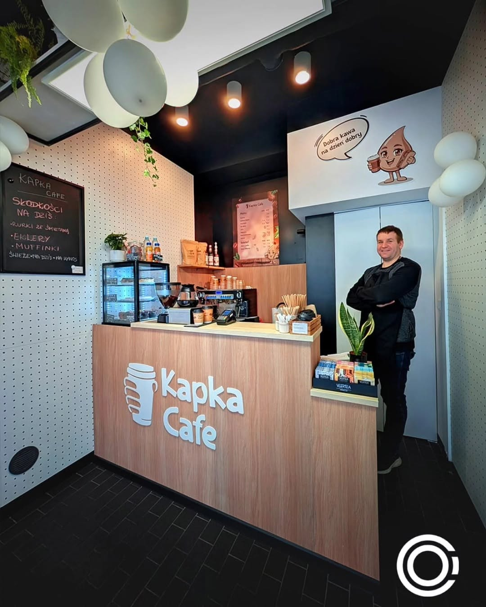
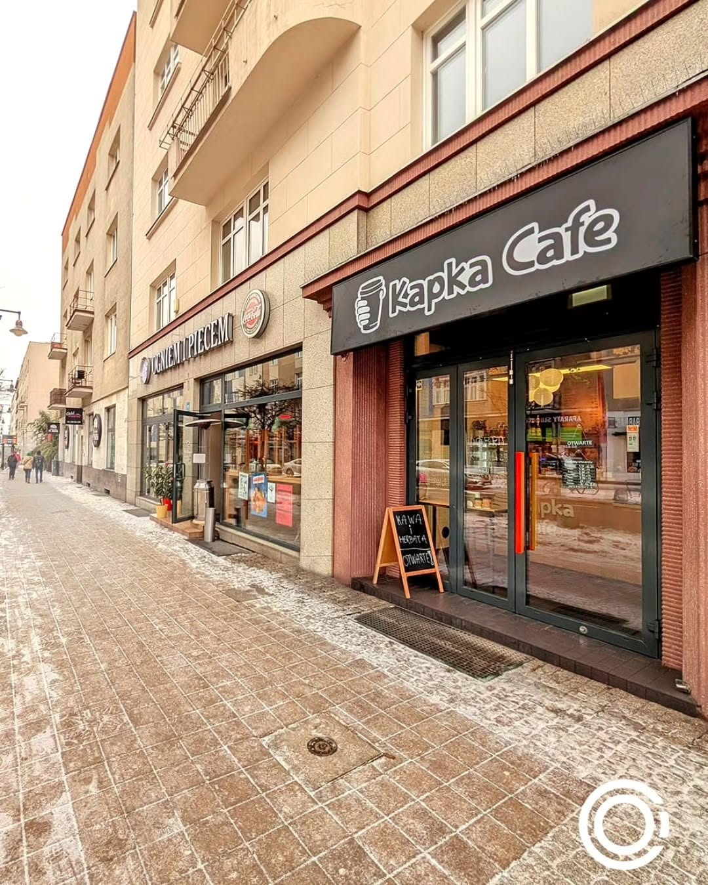

Kapka
Cafe.
Kompletna identyfikacja wizualna dla kawiarni Kapka Cafe: od znaku i maskotki, przez paletę i typografię, po materiały, które pracują na ladzie, w witrynie i w social mediach.
Marka zbudowana
wokół jednej kropli.
Kapka Cafe to niewielka, kameralna kawiarnia, która potrzebowała marki dopasowanej do swojej skali: ciepłej, przyjaznej i rozpoznawalnej z drugiej strony ulicy. Zaczęliśmy od nazwy, „kapka”, czyli kropla, i to ona stała się sercem całej identyfikacji.
Z jednej idei zbudowaliśmy pełny system: znak z kubkiem na wynos trzymanym przez dłoń, maskotkę-kroplę z charakterem oraz spójną paletę i typografię, które przenieśliśmy na wszystkie materiały, od menu po oznakowanie lokalu.
Logo, które od razu
mówi „kawa na wynos”.
Od znaku
po materiały lokalu.
Znak i logotyp
Sygnet z kubkiem na wynos trzymanym przez dłoń oraz miękki, odręczny logotyp „Kapka Cafe”, czytelny na szyldzie, w aplikacji i na kubku.
Maskotka-kropla
Uśmiechnięta kropla kawy z kubkiem i kanapką, bohater marki używany w social mediach, na banerach i jako naklejka witrynowa w lokalu.
Paleta i typografia
Ciepłe brązy palonej kawy, kremowe tło i miękki, zaokrąglony krój, które budują przyjazny, kawiarniany charakter i trzymają całość w jednym tonie.
Materiały i lokal
Menu, baner na Facebooka, szyld, litery przestrzenne na ladzie i naklejki, czyli identyfikacja przeniesiona na realne punkty styku z gościem.




„Jedna prosta idea, kropla, dała Kapka Cafe znak, maskotkę i spójny język, który wygląda tak samo dobrze na kubku, w witrynie i w social mediach.”